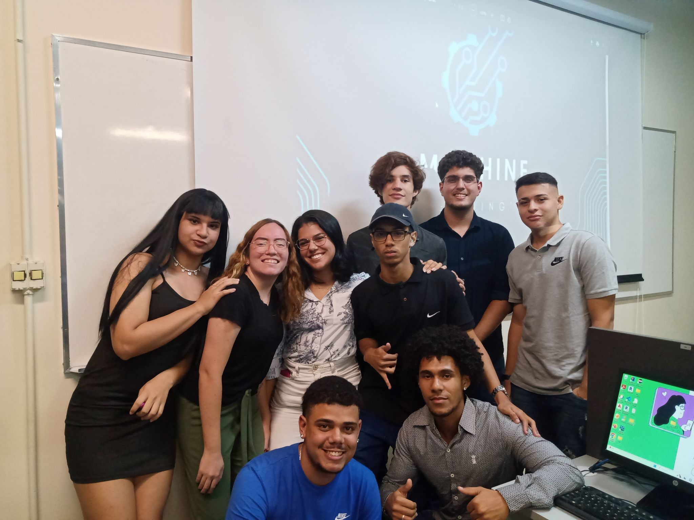
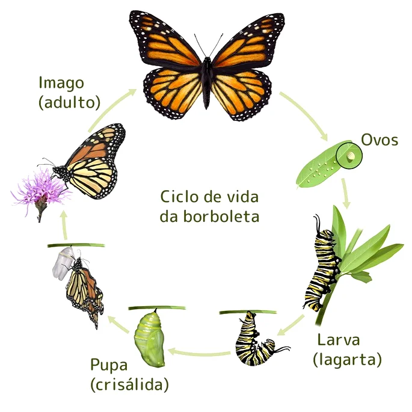

Introdução
Muito obrigado por fazer parte deste momento maravilhoso! Nesta página, eu irei mostrar de forma breve a maneira com que pude desfrutar de toda a oportunidade que me foi dada, de poder usufruir dos benefícios que a vida colocou no meu caminho como estudante do ensino superior.
Muitos desafios e obstáculos tive que enfrentar no decorrer do meu caminho, porém nada disso me abalou, pois a minha vontade de conquistar conhecimento era maior do que a minha vontade de desistir. E aqui estou eu, desenvolvendo esta página para contar um pouco sobre mim e também sobre o que pude viver neste semestre como aluno.
Sobre mim
Meu nome é Victor Costa Bergamin, sou formado em Tecnologia da Informação na escola técnica Proz Educação, e estou caminhando para o encerramento do meu primeiro semestre na turma de Análise e Desenvolvimento de Sistemas na Universidade Cruzeiro do Sul.
Atualmente, sou P.O (Product Owner) do grupo Machine Learning's, onde tenho o prazer de aplicar todos os conceitos ensinados pelo nosso orientador, Valter de Sales Santana, na prática, por meio do auxílio de cada integrante que participa deste grupo de acadêmicos. Tem sido uma experiência incrível poder ser um dos que estão à frente de um grupo que possui integrantes que têm a mesma sede que eu nesta jornada pela busca do conhecimento, obviamente, não só para direcioná-los, mas também para poder servi-los com tudo que esteja ao meu alcance e além dele. Seguem algumas das recordações:

Nesta imagem, podemos visualizar o grupo Machine Learning's com seus integrantes, onde neste dia estávamos fazendo a apresentação do nosso primeiro protótipo do portfólio ágil.
Storytelling
Muitos perguntam, o que é a vida? A definição científica da palavra "vida" baseia-se em uma entidade não eterna, ou seja, algo findável, que por sua vez, tem uma origem e uma fase de desenvolvimento para que, por fim, deixe de existir. Podemos exemplificar a "vida" da seguinte forma: Vamos imaginar uma borboleta; antes de uma borboleta se tornar quem ela é, precisa passar por exatas cinco fases até ela chegar na forma que podemos visualizar. A primeira delas é a do ovo, onde nessa fase ela irá se preparar para ir ao mundo e se desenvolver. Basicamente, é a fase que antecede o nascimento de fato.
A segunda fase é a fase larval, a famosa lagarta. É interessante imaginar que não existe somente um tipo de lagarta, existem algumas que são inofensivas para o homem, outras possuem veneno, outras são maiores ou menores. Tudo irá depender da espécie de borboleta que ela irá se tornar. Outra característica marcante da lagarta é que ela se alimenta praticamente a todo momento, pois para chegar até a fase da pupa, ela irá precisar de bastante energia para poder desenvolver os tecidos que ela desenvolve para poder se tornar uma borboleta, que, aliás, é seu estágio final.

Tudo que eu acabei de citar nada mais é do que a ciência chama de metamorfose. A razão pela qual eu descrevi a forma como ela ocorre é que podemos relacioná-la com o desenvolvimento do nosso conhecimento e amadurecimento pessoal.
A fase do ovo é a fase que a borboleta irá se preparar para se tornar uma larva, essa fase se relaciona como uma iniciativa, o princípio de uma decisão a ser tomada. No caso da conquista de conhecimento, você deve tomar a iniciativa, para que assim você seja como uma lagarta, que irá se alimentar desse conhecimento, tanto por meio de livros, professores, cursos, terceiros e muitos outros meios de conquistá-lo. Uma outra característica interessante da lagarta é que ela nunca estará imóvel, ela sempre estará em busca de novos lugares onde ela pode encontrar mais e mais comida.
Isso significa que o ambiente em que estamos pode influenciar tanto positivamente quanto negativamente. Um ambiente que possui mais oportunidades para buscar conhecimento é bem mais vantajoso em relação a um ambiente que possui poucas oportunidades para buscá-lo. No caso, quando você se encontra em um ambiente que possui poucas oportunidades, você terá duas opções: ou você irá se adaptar de alguma forma para conseguir obter o conhecimento necessário ou terá que mudar o ambiente para que assim possa encontrar mais oportunidades.
Retomando mais uma vez o tema das lagartas e a relação delas com a adaptação ao ambiente em que vivem, ao longo dos anos, existem algumas espécies de lagartas que tiveram que se adaptar ao ambiente em que vivem. Principalmente quando esse ambiente possui muitos predadores, elas acabaram se adaptando para poder existir outros meios para que elas não sejam predadas. Um desses meios foram: as cores vibrantes (faz com que o predador ache-a venenosa), peçonha (introduz veneno no predador por meio de glândulas produtoras de veneno) e muitas outras características adaptativas que elas foram desenvolvendo ao longo do tempo.
Neste semestre, passei por muitos desafios semelhantes ao da lagarta. Tive que me adaptar a muitas questões relacionadas a amizades, grupos de trabalho, administrar o pouco tempo que eu tenho nos meus estudos, direcionar os grupos aos quais sou líder e gestão de prazos de entrega de trabalho. Para que eu pudesse cumprir meus objetivos como aluno, tive que me adaptar para que assim eu pudesse crescer em amadurecimento, tanto como aluno como também na minha vida pessoal.